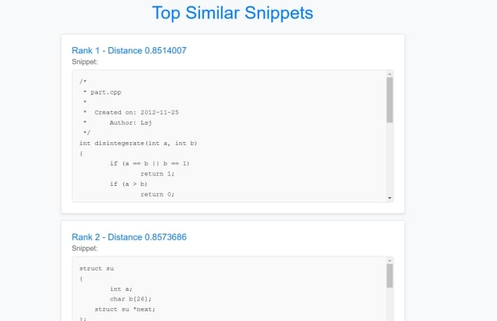
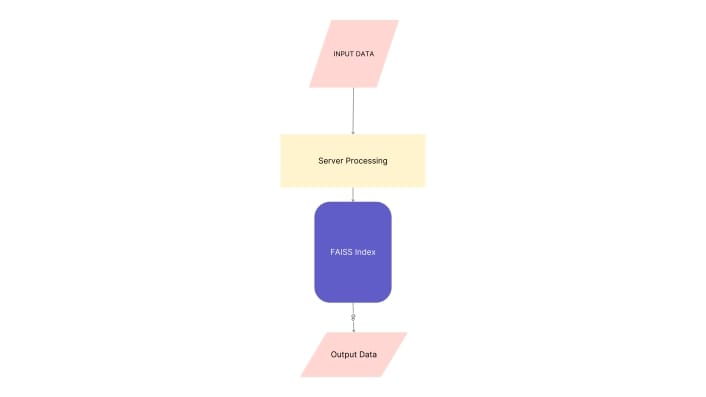
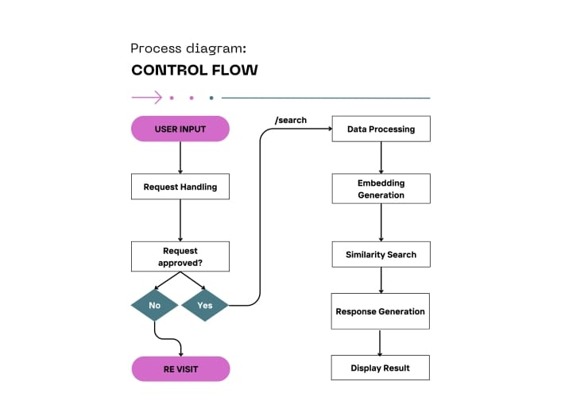

Semantically Similar Code Snippet Retrieval System
A semantic search engine that helps developers find functionally similar code using transformer embeddings (CodeBERT), FAISS vector search, and a lightweight Flask UI.

My Role
ML Engineer, System Architect
Category
Technical Case Study
Duration
8 Weeks (2024)
Tools & Tech
Python · Flask · CodeBERT · FAISS · PyTorch · Pandas · NumPy
The Problem / Objective
Developers need to find *functionally similar* code (code clones) across large codebases, but typical text searches fail when implementations vary in syntax, naming, or formatting. This wastes time in refactoring, debugging, learning, plagiarism detection, and legacy-code understanding.
Objective: Build a fast, reliable retrieval system that finds semantically similar snippets by using embedding-based representations rather than lexical matching.
Discovery & Research
Early exploration showed consistent gaps in lexical search approaches: semantically equivalent implementations looked unrelated at the token level. Embedding-based similarity was the clear solution. The Phase-3 technical materials guided dataset choices (POJ-104), preprocessing steps, and evaluation metrics. :contentReference[oaicite:2]{index=2}
Key Insight: Syntax varies — semantics don’t. To retrieve true similarity we must normalize code and use semantic embeddings rather than text matching.
- Prepared POJ-104 dataset: normalization, tokenization, JSONL outputs.
- Used CodeBERT to generate semantic embeddings for each snippet.
- Built a FAISS vector index for fast top-K retrieval.
- Exposed search and results via a Flask frontend.


Solution & Design Process
Delivered a product-quality retrieval pipeline with four parts:
- Preprocessing: clean code, strip comments, normalize formatting and names.
- Embeddings: CodeBERT → consistent semantic vectors.
- Indexing: FAISS index built from training embeddings for sub-second retrieval.
- Interface: Flask UI and API endpoints to accept queries and show results.
Architecture & Technical Challenges
The architecture combines a preprocessing pipeline, embedding engine (CodeBERT), FAISS index, and a lightweight Flask server. The system is designed for low latency and ease of integration.
Technical Challenge: Small formatting variations in source code caused embedding drift. We built a deterministic normalization + tokenization pipeline (regex cleaning, whitespace normalization, controlled tokenization) to stabilize embeddings and markedly improve retrieval quality. :contentReference[oaicite:3]{index=3}
Analysis & Strategic Recommendations
Evaluation on POJ-104 and test suites showed strong semantic accuracy and fast response times.
Recommendation: Integrate this retrieval engine as an IDE extension (VS Code), learning tool, or plagiarism detector. Extend to multi-language support and add explainability (why two snippets are similar).
Results & Impact
Key product outcomes delivered:
92%
Precision@5 on POJ-104
<1s
Average query latency (FAISS search)
Top-K
Robust FAISS-based vector retrieval
End-to-end
Preprocessing → Embedding → Indexing → UI
Learnings & Next Steps
Lesson Learned: The biggest gains came from data hygiene — consistent normalization produced more reliable embeddings than marginal model changes.
Next steps:
• Add multi-language (Python/Java/JS) embeddings and indexing
• Deploy as a scalable microservice (Kubernetes / cloud)
• Release an IDE plugin (VS Code / JetBrains) for developer adoption
• Add visualization for similarity rationale and plagiarism heatmaps